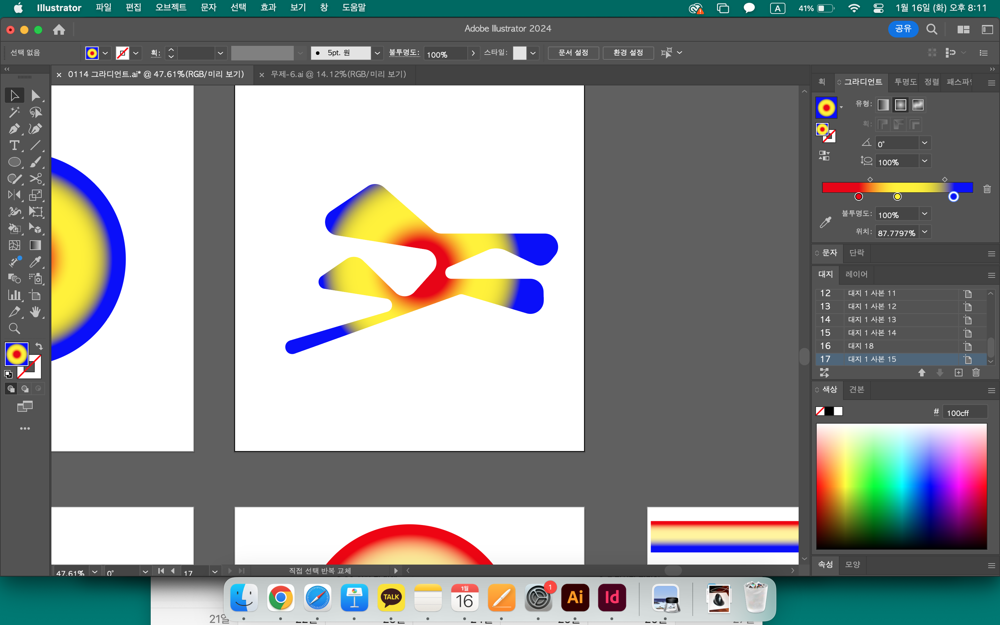
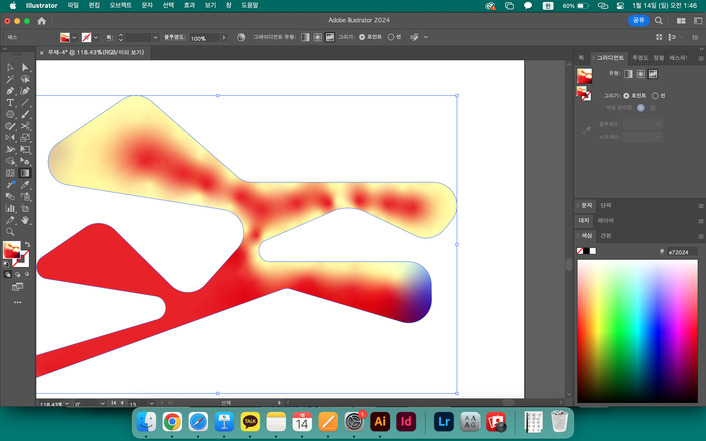
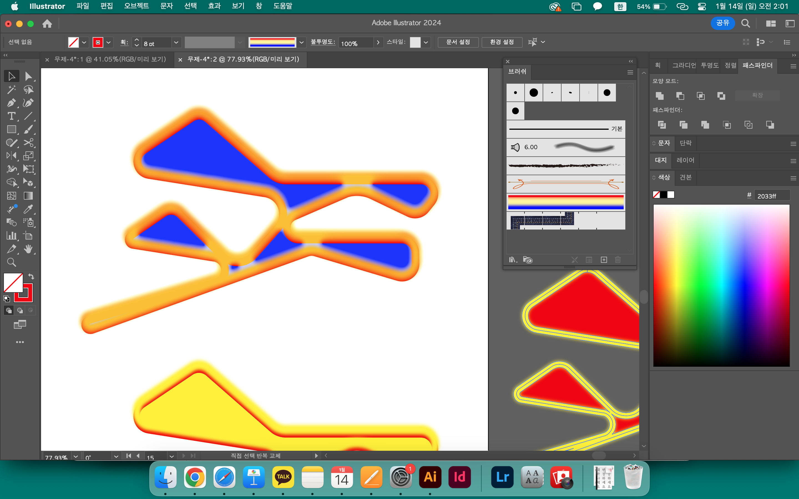

김서영 Seoyoung Kim
〈업데이트〉
1차 수리
일러스트레이터에서 도형의 중심으로부터 바깥으로 향하는 그라디언트 도구를 만들고 싶었다. 복잡한 모양에도 적용할 수 있는. 일러스트레이터에서 기본적으로 제공하는 그라디언트 기능 중 원형을 썼는데 모양에 곧바로 적용되지 않았다. 난 모양 안쪽에서부터 뻗어나오는 그라디언트를 원한다고. 있어서 족보의 시스템을 이해하는 데에 많은 도움이
2차 수리
꽤 최근에 생긴 기능 중 하나인 그라디언트-망 기능을 활용해보면 어떨까 생각했다. 이건 아니다.
3차 수리
내가 원하는 결과물로 가던 도중 예상치 못한 예쁜 색과 모양을 만났다. 기대한 바는 아니었지만 귀엽군.